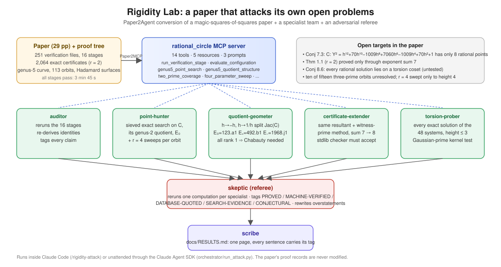

OSI Hackathon 2026 · physical sciences & mathematics · 22 October 2026 Repository: https://github.com/ksamiein-eng/magic-squares-agents · Figure below.
Evidence tags, assigned by the skeptic agent after rerunning one computation per specialist: [PROVED] in the paper with a verification stage · [MACHINE-VERIFIED] rerun in this project · [DATABASE-QUOTED] LMFDB · [SEARCH-EVIDENCE] bounded height · [CONJECTURAL].
A research paper on magic squares of squares (29 pages, 251 verification files, 16
machine-checkable stages) was converted, Paper2Agent-style, into an MCP server with 14 tools
bound to the paper's own code, 5 resources and 3 prompts. Seven agents use it: five
specialists attack the paper's open conjectures from different angles, a skeptic re-runs and
tags every claim, and a scribe writes this page. The pipeline runs as /rigidity-attack
inside Claude Code or unattended through the Claude Agent SDK. The paper's proof records are
never modified; all 16 stages still pass [MACHINE-VERIFIED, results/verify_paper_run.log].
Rational-circle rigidity: for every full-depth integer frequency matrix, no point of the
rational circle torus T(Q)^r makes the four sines have magnitudes {a, b, a+b, a−b}.
It is strictly stronger than "no 3×3 magic square of nine distinct squares" and is proved
in the paper for r = 2 through exponent sum 7 and reduced, for the three-parameter
configuration D1, to the completeness of eight known rational points on the genus-5 curve
C: Y² = h¹² + 70h¹⁰ − 1009h⁸ + 7060h⁶ − 1009h⁴ + 70h² + 1 (Conjecture 7.3).
1. The genus-5 curve splits, and every elliptic piece has rank 1 (quotient-geometer).
P is even and palindromic, so C has the involutions h → −h and h → 1/h. Quotients, with all
identities re-verified in SymPy [MACHINE-VERIFIED, results/genus5_quotient_structure.json]:
the genus-2 curve D: Y² = x⁶+70x⁵−1009x⁴+7060x³−1009x²+70x+1 (x = h²), which is bielliptic
with quotients E± : v² = (w±2)·g(w), w = x+1/x, and the direct quotient
E₀ : v² = g(s) = s³+70s²−1012s+6920 with s = h²+h⁻², v = Y/h³. The paper's own known points
map to points of infinite order on each curve: on E₀, (2,72) has 3·P with x = 11042/289, so
by Nagell–Lutz it is not torsion [MACHINE-VERIFIED]; likewise on E± [MACHINE-VERIFIED].
| curve | LMFDB | conductor | rank | torsion | isomorphism check |
|---|---|---|---|---|---|
| E₀ | 123.a1 | 3·41 | 1 | Z/5 | c₄, c₆ scaling u = 4 [MACHINE-VERIFIED]; rank [DATABASE-QUOTED] |
| E₊ | 492.b1 | 2²·3·41 | 1 | trivial | u = 8 [MACHINE-VERIFIED]; rank [DATABASE-QUOTED] |
| E₋ | 1968.j1 | 2⁴·3·41 | 1 | trivial | u = 12 [MACHINE-VERIFIED]; rank [DATABASE-QUOTED] |
Consequence: rank Jac(C) ≥ 3 [PROVED: the three curves have distinct j-invariants and conductors, so they are pairwise non-isogenous and their ranks add], and rank Jac(D) = 2 = genus(D) [DATABASE-QUOTED ranks], so the paper's rank-zero descent can never prove Conjecture 7.3 on an elliptic quotient, and classical Chabauty fails on D. The conjecture is a quadratic Chabauty problem on a bielliptic genus-2 curve of rank 2 (the Balakrishnan–Dogra setting) [CONJECTURAL as a route; the obstruction is MACHINE-VERIFIED]. This is new relative to the paper, which lists "a completed quadratic-Chabauty calculation" as missing without identifying the curves or their ranks.
2. Two-prime certificate extended to exponent sum 8 (certificate-extender).
The paper's own producer/checker pair (resultant in u, factor, witness prime; independent
standard-library checker with exact Sylvester determinants) was rerun on the four signatures
(7,1), (6,2), (5,3), (4,4): 140 raw normal forms, 72 inherited from the sum ≤ 7 certificate,
32 orbit representatives, 1,536 new signed systems. The merged certificate (75 cases, 3,600
systems, 2,159 catalog factors, 296,880 exact determinants, largest witness prime still 19)
passes the strict checker in 133 s with no unresolved case [MACHINE-VERIFIED,
agents/certificate_extender/results/verification_degree8_stdlib.json].
Theorem 1.1 now holds for k + ℓ ≤ 8: no A_{k,ℓ;m,n} with k+ℓ ≤ 8 has an admissible
rational-circle point, and the reduced-denominator bound becomes ≥ 9. (The arithmetic corollary
k+ℓ ≥ 9 is already subsumed by the archive's two-prime theorem the paper verified; the
rational-circle statement is not.) Producer wall-clock: 5.5 min on 5 cores.
3. Torsion-coset hypothesis tested on every rational solution at bounded height (torsion-prober).
The paper's r = 4 sweep (Prop. 8.2) was re-instrumented to record every exact rational
solution of all 48 signed systems, not only admissible ones, for all 113 orbits, all four
solved coordinates and all triples of height ≤ H, and each solution was tested with a
complete Gaussian-prime kernel test (a relation ∏ z_j^{n_j} ∈ {±1, ±i} exists iff the four
exponent vectors are dependent; not bounded by exponent size). H = 2: 71,168 distinct points;
H = 3: 273,024 distinct points (12,928 all-torsion, 260,096 on a torsion coset,
0 off every torsion coset), 15,152 free-angle families all with an identically vanishing
row, 0 admissible points; every point has a vanishing sine and two equal magnitudes
[MACHINE-VERIFIED, agents/torsion_coset_probe/results/torsion_coset_H3_summary.json;
cross-checked on 400-point samples by bounded brute force]. At height ≤ 3 the exponent rank
never exceeded 2, which iteration 1 recorded as a candidate sharpening; iteration 2 refuted
it (below). Caveat: at height ≤ 3 the grid carries only the split primes 5 and 13, so this
is evidence at small height [SEARCH-EVIDENCE for Conjecture 8.6].
4. No new rational point on C (point-hunter).
A vectorised residue sieve (moduli chosen by measured pass rate; the primes 2, 3, 5, 7, 11
have no sieving power because P is a square modulo 2304 and a square residue at 5, 7, 11)
followed by exact big-integer square tests scanned 500 billion pairs 0 ≤ p ≤ q ≤ 1,000,000 on C
in 6 minutes (300,000 in 37 s), and D to height 300,000: no point outside the known eight [SEARCH-EVIDENCE,
agents/point_hunter/results/search_results.json; selftest plants the known points through
the sieve]. E₀ has 12 small rational points, none lifting to C except s = 2. The 3,000-height
search inside the MCP server agrees
[MACHINE-VERIFIED, results/genus5_point_search_H3000.json].
5. The refuted sharpening becomes a lemma, and the lemma predicts the data (coordinator, from the height-4 failure).
A vanishing sine on row r means A_r·χ ∈ πZ, so ∏ z_j^{A_rj} = ±1: the row itself is a
multiplicative relation. Two equal magnitudes on rows i, j mean A_i·χ ≡ ±A_j·χ (mod π), so
A_i ∓ A_j is a relation, nonzero because rows are distinct projective vectors. Hence every
rational point that is degenerate in either sense lies on a torsion coset (the content of
Conjecture 8.6 for such points), a doubly degenerate point has exponent rank ≤ 3, and rank 3
occurs only if A_i ± A_j is parallel to the zero row A_r [PROVED, elementary; stated and
checked in agents/torsion_coset_probe/rank_bound.py]. The parallel-triple criterion holds
for exactly 23 of the 113 orbits; the two orbits where rank-3 points appeared at height 4
(0 and 54) are among them, and every recorded rank-3 point has a parallel degeneracy pair
[MACHINE-VERIFIED, agents/torsion_coset_probe/results/rank_bound_prediction.json]. The other
21 orbits are a prediction for height 5. Consequence for the paper: rigidity (Conj. 8.1)
implies the torsion-coset hypothesis for every point with a zero sine or two equal magnitudes,
the only other way a solution-variety point can fail admissibility being a = 2b, which gives no
monomial relation and which the probe never observed [PROVED / SEARCH-EVIDENCE].
The planner tool emitted the next increments from the ledger (propose_next_attack): exponent
sum 9 for Theorem 1.1 and height 4 for the torsion-coset probe. Both were launched with the same
playbooks and agents, with a 40-minute budget before the submission deadline.
Torsion probe at height 4 (complete, 113/113 orbits, 368 s on 6 workers). 662,528 distinct
rational points (24 grid values, 13,824 triples): 12,928 all-torsion, 649,600 on a torsion
coset, 0 off every torsion coset, 0 admissible, every point degenerate; 23,696 free-angle
families, none a counterexample. Conjecture 8.6 holds at H ≤ 4 [SEARCH-EVIDENCE,
agents/torsion_coset_probe/results/torsion_coset_H4_summary.json]. The int64 overflow guard
valid at H ≤ 3 was found invalid at H = 4 (row coefficients reach 15,625) and replaced by an
asserted range plus an exact re-test; the new script reproduces 18 iteration-1 checkpoints
exactly. The sharpening proposed by iteration 1 is false: 13,824 points have exponent
rank 3 (orbits 0 and 54, solved coordinate ±1/13), so rational points do reach torsion cosets
of 3-dimensional subtori; only the conjecture's own bound (rank < 4) survives
[MACHINE-VERIFIED refutation of the candidate sharpening, torsion_coset_H4_examples.json].
Certificate at exponent sum 9 (complete). The planner's command re-ran the same producer and
checker pair on the signatures (8,1), (7,2), (6,3), (5,4): 40 new orbit representatives, 1,920
new signed systems, 5,520 systems in the merged certificate, 3,207 catalog factors, 553,392 exact
Sylvester determinants; the strict standard-library checker returned PASS in 305 s with no
unresolved case [MACHINE-VERIFIED, agents/certificate_extender/results/certificate_degree9.json,
checker log verify_degree9_stdlib.log]. Theorem 1.1 now holds for k + ℓ ≤ 9, two exponent
sums beyond the paper, each step produced by the loop and accepted by the paper's own kind of
checker. The SymPy cross-check and mutation tests for sum 9 had not run at submission time.
The open-problem ledger types each target and names its playbook; the playbooks are paper-agnostic; the planner turns ledger state into the next command; the tag linter refuses any claim without a tag, an evidence file, a verifier and (for MACHINE-VERIFIED) a passing stage; the overlay runner absorbs accepted results as stages 17+ of the paper's own suite without touching the paper; traces, claim map and provenance make every step auditable.
The skeptic agent reran the sum-8 checker (PASS, 135 s), the point hunter's self-test and a
height-2,000 search, an independent exact check of two torsion-probe example points and their
relation vectors, and the quotient identities and non-torsion multiples; it confirmed all four
findings, downgraded two sentences (ranks "= 1" and "rank Jac(D) = 2" are database-quoted),
and flagged two reporting defects that were fixed (results/skeptic_verdict.md).
Theorem 1.1 moved from exponent sum 7 to 8 (one more proved case of rigidity for r = 2). Conjecture 7.3 did not move, but its obstruction is now precise: three rank-1 elliptic quotients identified, so the next step is quadratic Chabauty, not descent. Conjecture 8.6 gained its first systematic evidence (273,024 points at height 3, 662,528 at height 4, no exception); a sharper form proposed after height 3 was refuted at height 4, which is the loop working as intended. The empty region on C grew from height 1,500 to 1,000,000. Each of these took one specialist under 20 minutes of compute; the paper's proof records were not touched.
Verbatim agent transcripts (traces/), a claim map linking every statement to its trace
turn and re-check command (CLAIM_MAP.md), provenance with transcript and result hashes
(PROVENANCE.json, SHA256SUMS), and a one-command reproduction (verify_findings.py),
following the conventions of the paper's own package.
Version 3 of the paper (paper_update/manuscript/, authors K. Samiein and J. Wolinski, 22 October
2026) adds Theorem 4.5 (sum nine), a quotient section, and the degeneracy-rank lemma, each tied to its
evidence in paper_update/CHANGES_v3.md. docs/GENERALIZATION.md states what the loop needs from a
problem, what "validated" means and does not mean here, and the next instances.
Quadratic Chabauty on D with the LMFDB generators of 492.b1 and 1968.j1, then the ten unresolved orbits through the same quotient analysis; the agents already expose both as tools.
